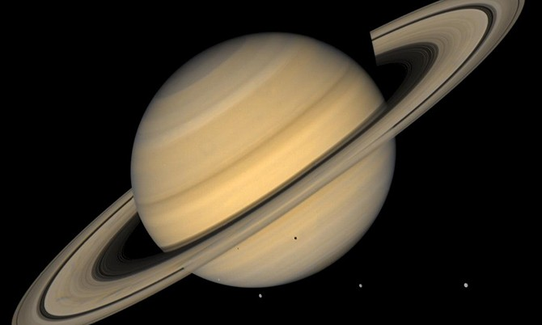

|

|
SATÜRN
Satürn, Güneş Sisteminin Güneş'e yakınlık sırasına göre 6. gezegenidir. Büyüklük açısından Jüpiter'den sonra ikinci sırada gelir. Adını Yunan mitolojisindeki Kronos'tan alır. Çıplak gözle izlenebilen 5 gezegenden biri (diğerleri, Merkür, Venüs, Mars ve Jüpiter) olarak eski çağlardan beri insanoğlunun dikkatini çekmiştir. Büyük ölçüde hidrojen ve helyumdan oluşmakta ve gaz devleri sınıfına girmektedir.
Su yoğunluğu ile karşılaştırıldığında 0,69 olan bu değer, Yerküre'nin yoğunluğunun %12'si kadardır. Düşük yoğunluk, gezegenin akışkan yapısı ve kendi çevresindeki dönüş hızının yüksekliği ile birleşerek, Satürn'e ekvatorda geniş, kutuplarda basık elipsoid görüntüsünü vermektedir. Yansıtılabilirlik derecesi(albedo) 0,47 olan gezegen, böylece yüzeyine düşen güneş ışığının yarıya yakınını görünür tayfta yansıtmaktadır ancak kızılötesi alandaki ışınım ölçüldüğünde, Satürn'ün Güneş'ten aldığı enerjinin 3 kat fazlasını dışarı yaydığı görülür. Bu nedenle gezegen, Güneş'e olan uzaklığına göre hesaplanan 71K' den (-202 °C) çok daha yüksek bir etkin sıcaklığa sahiptir ve 95K (-178 °C) sıcaklığında bir kara cisim gibi ışır. Satürn'ün kendi içinde yarattığı bu enerji fazlası, gezegenin yerçekiminin etkisi ile yavaşça kendisi üzerine çökerek küçülmesi sırasında dönüştürülen potansiyel enerji ile açıklanmaktadır. Kelvin-Helmholtz mekanizması olarak adlandırılan ve daha sınırlı ölçüde Jüpiter'de de gözlenen bu olgu Satürn'ün yarattığı ısıl enerji fazlasını tek başına açıklamaya yeterli değildir. Ek bir mekanizma olarak, gezegenin yüzeye yakın katmanlarında hidrojen ile karışım halinde bulunan helyumun ağırlığı nedeniyle merkeze doğru süzülerek göç etmesi sırasında potansiyel enerjisinin bir kısmını açığa çıkarması önerilmektedir.
|